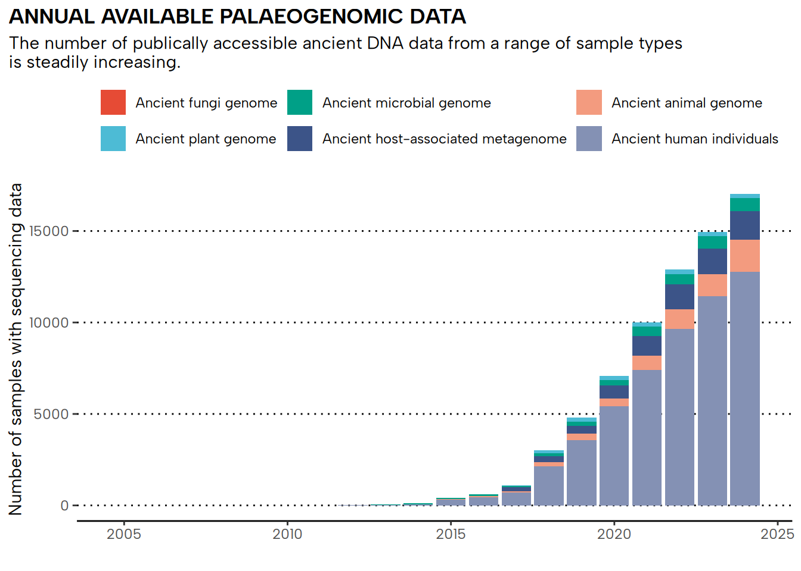

library(tidyverse)
library(ggsci)Figure 1: Figure Generation
This notebook describes the generation of a stacked bar plot describing the number of publicly available data samples, grouped by the most common ancient DNA data sample types (excluding sediment DNA).
Required libraries and versions
For plotting we need R and the the following libraries, and versions
For version information
sessionInfo()R version 4.4.1 (2024-06-14)
Platform: x86_64-pc-linux-gnu
Running under: Ubuntu 24.04.1 LTS
Matrix products: default
BLAS: /usr/lib/x86_64-linux-gnu/blas/libblas.so.3.12.0
LAPACK: /usr/lib/x86_64-linux-gnu/lapack/liblapack.so.3.12.0
locale:
[1] LC_CTYPE=en_GB.UTF-8 LC_NUMERIC=C
[3] LC_TIME=en_GB.UTF-8 LC_COLLATE=en_GB.UTF-8
[5] LC_MONETARY=en_GB.UTF-8 LC_MESSAGES=en_GB.UTF-8
[7] LC_PAPER=en_GB.UTF-8 LC_NAME=C
[9] LC_ADDRESS=C LC_TELEPHONE=C
[11] LC_MEASUREMENT=en_GB.UTF-8 LC_IDENTIFICATION=C
time zone: Europe/Berlin
tzcode source: system (glibc)
attached base packages:
[1] stats graphics grDevices utils datasets methods base
other attached packages:
[1] ggsci_3.2.0 lubridate_1.9.3 forcats_1.0.0 stringr_1.5.1
[5] dplyr_1.1.4 purrr_1.0.2 readr_2.1.5 tidyr_1.3.1
[9] tibble_3.2.1 ggplot2_3.5.1 tidyverse_2.0.0
loaded via a namespace (and not attached):
[1] gtable_0.3.5 jsonlite_1.8.8 compiler_4.4.1 tidyselect_1.2.1
[5] scales_1.3.0 yaml_2.3.8 fastmap_1.1.1 R6_2.5.1
[9] generics_0.1.3 knitr_1.46 htmlwidgets_1.6.4 munsell_0.5.1
[13] pillar_1.9.0 tzdb_0.4.0 rlang_1.1.3 utf8_1.2.4
[17] stringi_1.8.3 xfun_0.43 timechange_0.3.0 cli_3.6.2
[21] withr_3.0.0 magrittr_2.0.3 digest_0.6.35 grid_4.4.1
[25] rstudioapi_0.16.0 hms_1.1.3 lifecycle_1.0.4 vctrs_0.6.5
[29] evaluate_0.23 glue_1.7.0 fansi_1.0.6 colorspace_2.1-0
[33] rmarkdown_2.27 tools_4.4.1 pkgconfig_2.0.3 htmltools_0.5.8.1Raw data loading and auxiliary data
We can load the prepared data from the previous notebook.
data_subset_combined <- read_tsv('bergstrom2024comment_figure1_dataforplotting.tsv')Rows: 69 Columns: 4
── Column specification ────────────────────────────────────────────────────────
Delimiter: "\t"
chr (1): sample_type
dbl (3): publication_year, n_samples_per, n_samples_cumul
ℹ Use `spec()` to retrieve the full column specification for this data.
ℹ Specify the column types or set `show_col_types = FALSE` to quiet this message.We get the full list of years from all sample types to guide the legnth of the X-axis.
data_year_range = seq(
min(data_subset_combined$publication_year),
max(data_subset_combined$publication_year),
)For more natural ordering of the stacked bar plots, we order find the order of most to least number of samples per group (so more numerous sample types go on the bottom of the stack).
data_type_order <- data_subset_combined |>
select(sample_type, n_samples_cumul) |>
group_by(sample_type) |>
summarise(current = max(n_samples_cumul)) |>
arrange(current) |>
mutate(sample_type = as_factor(sample_type)) |>
pull(sample_type)Plotting
We can now plot a stacked bar plot roughly following what other Nature comment piece figures look like, namely:
- A NPG-derived colour palette
- Minimal grid lines (only major y-axis indicators with dotted line)
- No Y-axis label
- A nicer Sans Serif font
plot_final <- ggplot(data_subset_combined |> mutate(sample_type = factor(sample_type, levels = data_type_order)), aes(publication_year, n_samples_cumul, fill = sample_type)) +
geom_col() +
scale_fill_npg(breaks = data_type_order) +
theme_classic() +
theme(
axis.line.y = element_blank(),
legend.position = "top",
panel.grid.major.y = element_line(colour = "black", linewidth = 0.5, linetype = 'dotted'),
text = element_text(family = "Albert Sans"),
plot.title = element_text(face = "bold", hjust = 0),
plot.title.position = 'plot',
) +
xlab('') +
ylab('Number of samples with sequencing data') +
guides(fill = guide_legend(title = "")) +
labs(title = "ANNUAL AVAILABLE PALAEOGENOMIC DATA", subtitle = "The number of publically accessible ancient DNA data from a range of sample types \nis steadily increasing.")
plot_final
ggsave(plot_final, filename = 'figure1.png', device = png, dpi = 300, width = 2200, height = 1250, units = 'px')